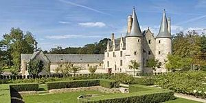
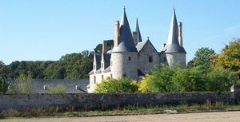
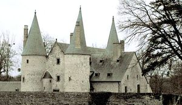
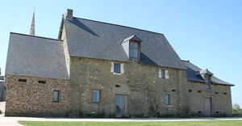

Recensement Jean-Claude Truffet
| Département | 35 — Ille-et-Vilaine |
| Canton | Châteaugiron |
| Commune | Noyal-sur-Vilaine, |
| Type d'édifice | Château |
| Période d'origine | XIV-XV |
| Coordonnées GPS | 48° 06' 45" Nord 1° 31' 24" Ouest La motte GPS : 48° 06' 45" Nord 1° 31' 24" Ouest |




deux châteaux à Noyal sur Vilaine; Bois-Orcan et la Motte. BOIS-ORCAN ce joyau de larchitecture du XVe siècle a été élevé par Julien Thierry, argentier dAnne de Bretagne. Avec sa salle basse remarquable, ses élégantes cheminées et ses plafonds finement ouvragés, le Bois-Orcan atteste de la réussite familiale des Thierry. Résidence seigneuriale raffinée qui offre une rare collection de meubles et dobjets médiévaux. Contigu à la douve du château, le jardin a retrouvé sa facture médiévale grâce au paysagiste Alain Richert. La beauté particulière de ce jardin se distingue par sa composition en trois parties qui offrent un rare plaisir olfactif et visuel : la Cour damour, la Fontaine de vie et le Jardin de curiosités. Le domaine présente lAthanor, luvre dEtienne-Martin, sculpteur français de réputation internationale. Le musée intérieur accueille ses bois ainsi que d'autres sculptures originales. Le musée extérieur, un parc spécialement conçu avec lartiste, met en valeur ses sculptures monumentales en bronze sur un site de trois hectares. Orienté au sud, le logis présente deux corps de bâtiment qui forment un plan en T. Le premier, un long corps de logis rectangulaire, borde la cour. Le deuxième, de plan presque carré, est greffé sur la face postérieure. A la jonction des deux, se dresse une tour d´escalier polygonale. Le pignon oriental du corps principal est flanqué de deux tours circulaires. La partie Est du logis est en rez-de-chaussée surélevé. La partie principale du logis possède un étage surmonté d'un étage de comble.Éléments protégés MH : le manoir, classement par arrêté du 10 septembre 1987 : inscription par arrêté du 17 octobre 1994.
La MOTTE, c'est au lieu-dit de la Motte qu'était l'ancienne maison seigneuriale de Noyal. Un aveu de 1747 signale que le Manoir de Noyal était "près du cimetière de l'église paroissiale", à côté de l'ancienne motte féodale. Au XIe siècle, le seigneur a reçu l'autorisation du comte Eudes (frère du duc Alain) d'édifier un château. En 1350, la Seigneurie appartint à Goeffroy de Chevaigné puis, à son fils en 1397. Au XVe siècle, elle passe par alliance à Armel de Châteaugiron (seigneur de Saint-Jean-de-Laillé), par alliance aux de Saint-Amadour (seigneurs de Tizé) qui l'avait en 1433. Puis, elle repasse à ces derniers (en Thorigné) en 1789. Ayant émigré, les biens de Kéroignant de Trésel, Seigneur de Tizé, dont les biens furent confisqués comme biens nationaux. À cette époque, la motte féodale avait déjà disparu. La Seigneurie possédait un droit de justice et un droit de quintaine au Chaussix (qui a le sens de chaussée et de four à chaux). Le Manoir de la Motte a été restauré, en 2003, faisant disparaitre le cellier en appentis et reliant le Manoir de la Motte au Prieuré, l'ensemble formant le Centre Culturel appelé L'Intervalle.
Bois-Orcan;Julien Thierry, La Motte;
"
deux châteaux à Noyal sur Vilaine; Bois-Orcan- grav-1-2-3 et la Motte grav-4. Bois orcan GPS : 48° 06' 45" Nord 1° 31' 24" Ouest La motte GPS : 48° 06' 45" Nord 1° 31' 24" Ouest